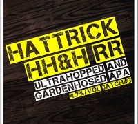

Batch #3 Hattrick – Ultrahopped and Gardenhosed

Sjølvbrygga Lucky Jack med for mye humle i følge noen, andre ikke.
Leif henter kaffe mens Gaute, Steffen og Jonas rengjør flasker. Fredrik er AWOL i Bergen.
Digitale hjelpemiddel som digitalt termometer og PC med både fingeravtrykksleser og tøtsj-skjerm ble tatt i bruk, inkludert BeerSmith. Jonas ble bedt om å måle opp 21,39 l vann, sa pøh! og målte opp cirka det. Det ble varmet opp til 75,7 iflg dig. termometer ved hjelp av NMFs 2 kokeplater og Koreawatt. Mesking startet 11:45 med 8,2 kilo malt. Temp 70 grader etter tilsetning. Diskusjon om lokk eller ikke.
Tone ringer 11:48, falsk alarm (kun litt lekking av fostervann). Mesking ferdig 13:30, Leif bekymret for volum etter at 5 teskjeer er tatt ut for måling. Vi skyller deretter meskeposen med 33 liter vann gjennom dørslag på noen å 60 grader i snitt, lite varmetap på grunn av isolasjon med tepper rundt plast-dingsen. “Se, vannet som kommer ut er jo helt klart”, sies det og skylling blir klassifisert som suksess. Note to self: Oppvarming av skyllevann må påstartes tidligere. Gjerne med lokk.
Ved oppkok 14:25 er det kun 1cm fra toppen av kjelen til vannet (på ene siden). Det anslås til 49 liter.
Pre-boil OG: 42 (sinnsykt bra). Gaute mener vi må ha lokk – eller ikke.
Jonas mener avtrekket er bedret seg siden forrige batch.
Humle 1 = Perle 10g (alfasyreprosent og de) tilsettes 14:55
Leif foreslår Pizza, men Jonas skal spise Baccalao. Steffen er for pizza allikevel og kaller Leif og Gaute for fjortisser pga. uklare pizzaingrediensønsker. Glemmer at Tone skal ha mat også, men det er heldigvis nok til alle. Pappabrus drikkes. Jonas skal kun ha 1 stykke og holder fortet i mellomtiden.
Humle 2 = 75g Chinook tilsettes 15:40.
Humle 3 = 75g Amarillo (snadderhumlen) tilsettes 15:45
Ferdig kok 15:55. Hageslangekoblinger skaper litt panikk når vi skal kjøle, men kun bittelitt ustarsanna vann havner i kjelen.
Post-boil OG: 46 (!!!).
Det tappes på gjæringskar. P.g.a. manglende gjærlås må Gud selv mekke en med slange og starsanflaske – resultat veldig bra, selvfølgelig.
Snap sendes av boblende godsaker dagen derpå